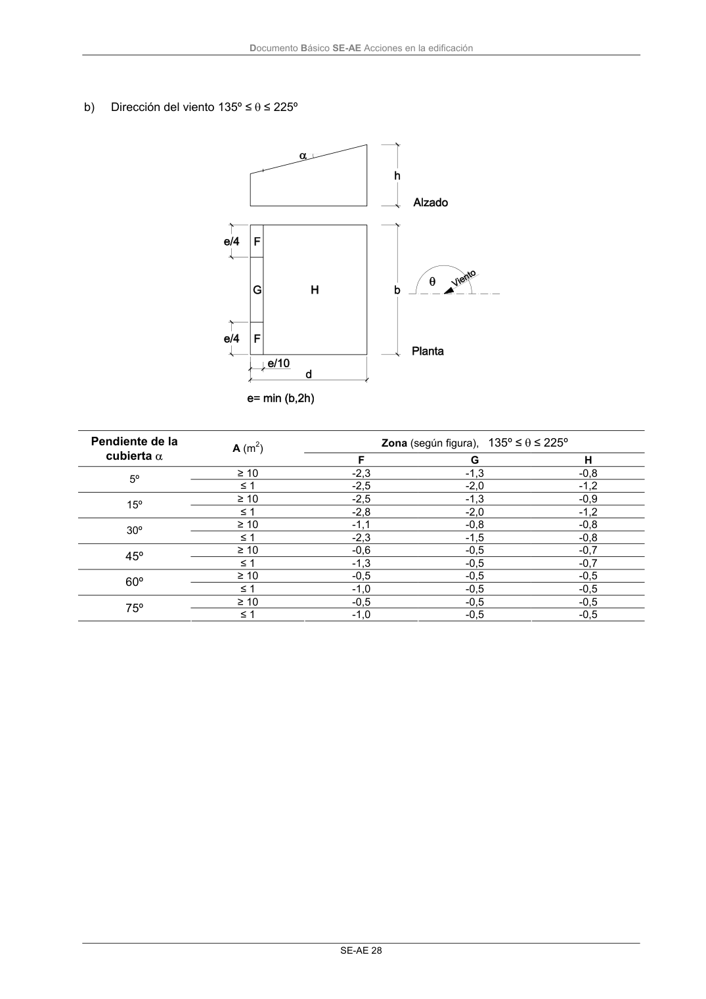

DB-SE-AE · Página 32 · versión 2009-04
SHA256: 26116e5088955f0c6963a6187270cad282e1e7bf5a53a90f695c8fa50b4e4487 · página física 32 de 46 · métodos de encabezado
solo si están cotejados.
Formatos: Markdown · JSON de bloques · PDF p. 32 · imagen PNG
Documento Básico SE-AE Acciones en la edificación SE-AE 28 b) Dirección del viento 135º ≤ θ ≤ 225º Zona (según figura), 135º ≤ θ ≤ 225º Pendiente de la cubierta α A (m2) F G H ≥ 10 -2,3 -1,3 -0,8 5º ≤ 1 -2,5 -2,0 -1,2 ≥ 10 -2,5 -1,3 -0,9 15º ≤ 1 -2,8 -2,0 -1,2 ≥ 10 -1,1 -0,8 -0,8 30º ≤ 1 -2,3 -1,5 -0,8 ≥ 10 -0,6 -0,5 -0,7 45º ≤ 1 -1,3 -0,5 -0,7 ≥ 10 -0,5 -0,5 -0,5 60º ≤ 1 -1,0 -0,5 -0,5 ≥ 10 -0,5 -0,5 -0,5 75º ≤ 1 -1,0 -0,5 -0,5
